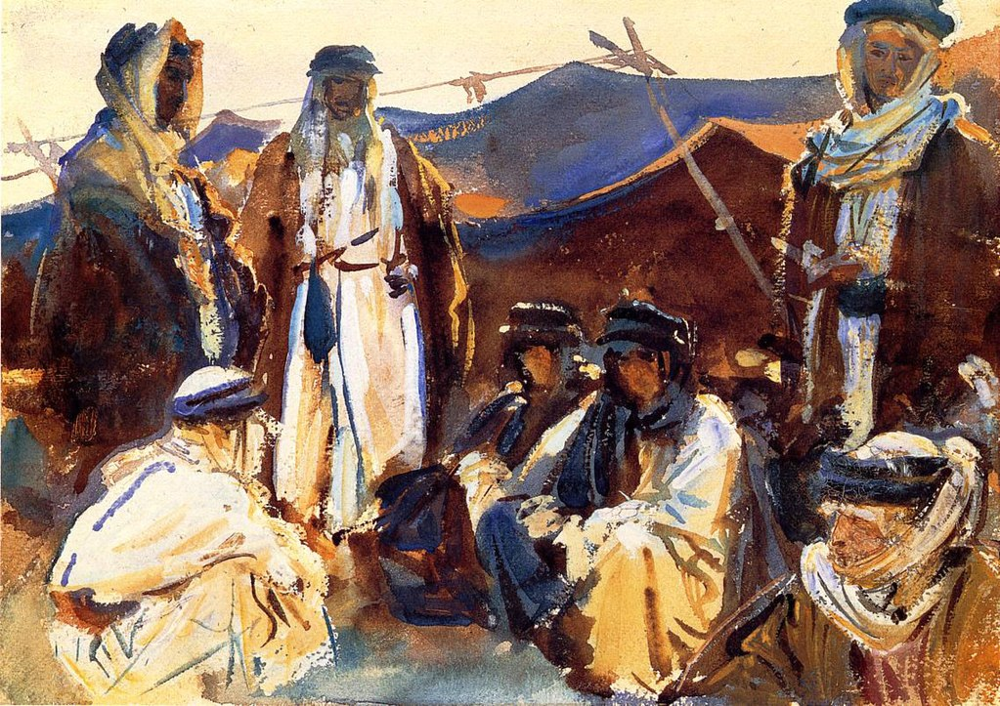

<head>
<meta charset="UTF-8" />
<meta name="keywords" content="drawing, painting" />
<meta name="description" content="drawings by Sunjy" />
<title>Sunjy</title>
<link rel="shortcut icon" type="image/x-icon" href="../../mImages/mCommon/favicon.ico" media="screen" />
<link rel="stylesheet" type="text/css" href="../../mCsses/mCommon/mCssA.css" />
<link rel="stylesheet" type="text/css" href="../../mCsses/mCommon/mCssB.css" />
<link rel="stylesheet" type="text/css" href="../../mCsses/mCommon/mCssC.css" />
<link rel="stylesheet" type="text/css" href="../../mCsses/mCommon/mCssD.css" />
<link rel="stylesheet" type="text/css" href="../../mCsses/mContent/mCssA.css" />
<link rel="stylesheet" type="text/css" href="../../mCsses/mContent/mCssB.css" />
<link rel="stylesheet" type="text/css" href="../../mCsses/mContent/mCssC.css" />
<link rel="stylesheet" type="text/css" href="../../mCsses/mContent/mCssD.css" />
</head>
<script type="text/javascript" src="../../mScripts/mContent/mContentAA.js" /></script>
<script type="text/javascript" src="../../mScripts/mContent/mContentAB.js" /></script>
<script type="text/javascript" src="../../mScripts/mContent/mContentAC.js" /></script>
<script type="text/javascript" src="../../mScripts/mContent/mContentAD.js" /></script>
<script type="text/javascript"></script> 
<script type="text/javascript">
document.write('<div class="mImgAbsolute"></div>');
/*
document.write('<p class="mFontSizeBColor" />From a white paper...</p>');
document.write('<table class="center"><tr><td>');
document.write('');
document.write('</td></tr></table>');
*/
</script>


<script type="text/javascript">
document.write('<p class="mFontSizeBColor" />Bedouin Camp</p>');
document.write('<p class="mFontSizeSColor" />“Bedouin Camp” by John Singer Sargent. Sargent made extensive tours to the Middle East and North Africa, where he painted many Bedouin scenes. In Bedouin Camp, Sargent used undiluted watercolors straight from the tube.<br><br>He also bulked colors with the addition of white zinc paint, as can be seen in the buildup and cracking of paint in the face and turban of the squatting Bedouin at the lower right.<br><br>The Bedouin are a grouping of nomadic Arab people who have historically inhabited the desert regions in North Africa, the Arabian Peninsula, Iraq, and the Levant.<br><br>The English word bedouin comes from the Arabic word for “desert-dweller.” Their traditions include the Bedouin tents depicted in this painting.<br><br>In the late 19th century, many Bedouin began the transition to a semi-nomadic lifestyle. One of the factors was the influence of the Ottoman empire authorities, who viewed the Bedouin as a threat to the state’s control.<br><br>Ten years after this painting, some of the Bedouin clans in his paintings fought with the Turks against the British in World War I. Still, later, with T. E. Lawrence’s aid, the Bedouins switched sides and fought the Turks during World War I.<br><br>This painting captures the image many Westerners associate with the Bedouins, who fought against the Ottomans.<br></p>');
document.write('<table class="center" /><tr><td>');
document.write('<br>He also bulked colors with the addition of white zinc paint, as can be seen in the buildup and cracking of paint in the face and turban of the squatting Bedouin at the lower right.<br><br>The Bedouin are a grouping of nomadic Arab people who have historically inhabited the desert regions in North Africa, the Arabian Peninsula, Iraq, and the Levant.<br><br>The English word bedouin comes from the Arabic word for “desert-dweller.” Their traditions include the Bedouin tents depicted in this painting.<br><br>In the late 19th century, many Bedouin began the transition to a semi-nomadic lifestyle. One of the factors was the influence of the Ottoman empire authorities, who viewed the Bedouin as a threat to the state’s control.<br><br>Ten years after this painting, some of the Bedouin clans in his paintings fought with the Turks against the British in World War I. Still, later, with T. E. Lawrence’s aid, the Bedouins switched sides and fought the Turks during World War I.<br><br>This painting captures the image many Westerners associate with the Bedouins, who fought against the Ottomans.<br>" />');
document.write('</td></tr></table>');
</script>


